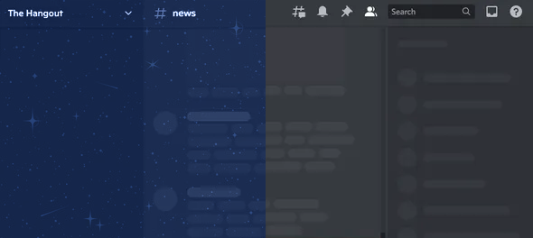

Dual Ecosystem
Load BD-style and Vencord-style plugins from one unified interface. No reinstalling or profile switching.
ReCord merges the best of BetterDiscord and Vencord into one open-source client — with built-in opsec, 300+ verified-safe plugins, mass moderation tools, and unlimited CSS theming. No compromises.
0 Total Downloads
import { definePlugin, ReCord } from "@record/core" export default definePlugin({ name: "ServerInsights", description: "Deep server analytics and audit logs", verified: true, safe: true, onStart() { // Auto-sandboxed — read-only API access only ReCord.registerPanel("Server Stats") }, })
Features
No more juggling between tools. ReCord unifies BD and Vencord in a single clean package.
Load BD-style and Vencord-style plugins from one unified interface. No reinstalling or profile switching.
Every plugin in the official ReCord index passes a full manual safety review before reaching users.
Edit your Discord theme in real time with a built-in CSS editor, variable panel, and hot-reload on save.
Built-in plugin API, event inspector, and DevTools for building and debugging custom modules fast.
Permission scoping, trust ratings, telemetry visibility, and config audit snapshots — on by default.
High-speed bulk moderation with gated confirmation flows and full action logs for server management.
Themes
Style your client your way with first-class theme support and active community sharing.
Load custom CSS themes instantly, tweak variables live, and keep your setup synced with your plugins.
Community themes are shared in the official Discord server.
Open Community Themes
Plugins
Press the settings or info icon to inspect plugin details. Verified plugins are marked and safe by default.
0 plugins tracked from src/plugins. Showing live examples below.
Right click your account panel in the bottom left to view your profile in the current server.
Animates anything that can be animated.
Always expands the role list in profile popouts.
Removes the annoying untrusted domain and suspicious file popup.
Security First
Security isn't bolted on — it's baked into how ReCord works.
Every plugin shows its full permission scope and a trust score before you enable it.
Mass actions always require explicit confirmation — accidental purges are impossible.
Every plugin runs sandboxed with only the permissions it explicitly requests. Nothing more.
Track every config change and roll back your full setup to any previous state instantly.
Free & Open Source
Ready in minutes. No account needed. Packed with features from day one.